|
Chang Shi 「施畅」
I am a Ph.D. student at UT Austin working with Prof. Ann Majewicz Fey. I also worked closely with Prof. Amy Zhang. My research focuses on developing efficient robot learning methods that are scalable, generalizable and deployable, from diverse data including but not limited to expert demonstrations, suboptimal trajectories, in-the-wild videos, and heuristics. I have the long-term vision that embodied AI agents can help humans with daily chores, through either autonomous or semi-autonomous solutions. Recently, I am working on imitation learning and controllable representation learning for world models.
Previously, I was a Master's student at the Robotics Institute at Carnegie Mellon University, working with Prof. Howie Choset and Prof. John Galeotti on biomedical robotics. I received my Bachelor's degree in Computer Science from Renmin University of China. I also worked with Prof. Andrea L. Bertozzi on ego-motion classification of body-worn videos as a visiting undergraduate scholar at UCLA.
In my spare time, I enjoy playing piano, tennis and skateboarding.
Email /
Scholar /
Twitter /
LinkedIn /
Github
|
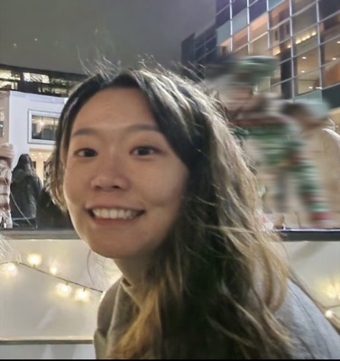
|
News
- I will attend CoRL 2026 happening at Austin. Let's connect!
- Oct 2026: Glad to give a talk at Horizon Robotics.
- Sep 2026: SkillsBench is accepted to NeurIPS 2026!
- April 2026: Factored Latent Action World Models (FLAM) is accepted to ICML 2026!
- Mar 2026: Started my internship at Microsoft Research NYC, working on LLM pretraining and world models.
- Jan 2026: Selected for the AAAI Doctoral Consortium 2026 in Singapore.
- Nov 2025: Glad to give a talk at the Cohere Labs Embodied AI group.
- May 2024: Returned to Amazon Robotics for my second internship, working on consolidation planning and reinforcement learning.
|
Research
(* denotes equal contribution)
I'm interested in robot learning, imitation learning, reinforcement learning, and world models. Earlier, I worked on medical and surgical robotics.
|
|
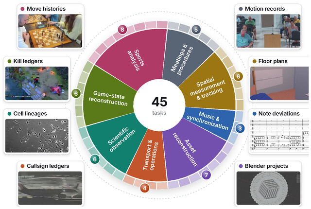
|
AgenticVBench-Omni: Evaluating Omnimodal Agents on Economically Valuable Work
Michelle Wang,
Xiatao Sun,
Jiaxuan Luo,
Chong Peng,
Su Wang,
Chang Shi,
...,
Xinyu Hu
Under review at ICLR, 2027
|
|
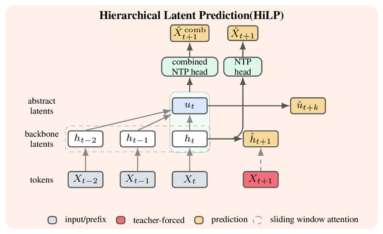
|
Hierarchical Latent Prediction for Language Models
Chang Shi,
Tim Pearce,
Manan Tomar,
Siddhartha Sen,
John Langford
arXiv, 2026
arXiv
|
|
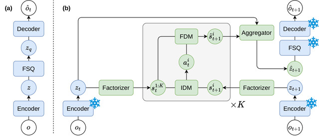
|
Factored Latent Action World Models
Zizhao Wang*,
Chang Shi*,
Jiaheng Hu,
Kevin Rohling,
Roberto Martín-Martín,
Amy Zhang,
Peter Stone
ICML, 2026
paper
/
arXiv
/
NeurIPS 2025 workshop version
|
|
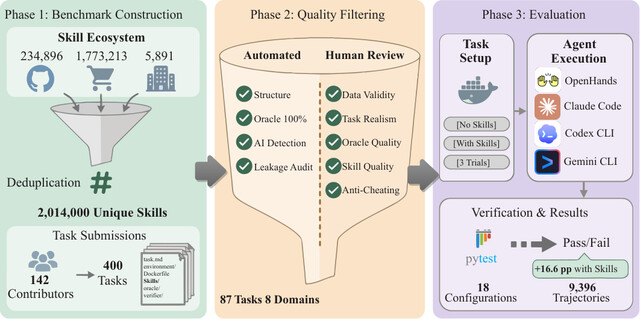
|
SkillsBench: Benchmarking How Well Agent Skills Work Across Diverse Tasks
Xiangyi Li,
Yimin Liu,
Wenbo Chen,
...,
Chang Shi,
...,
Dawn Song
NeurIPS, 2026
arXiv
|
|
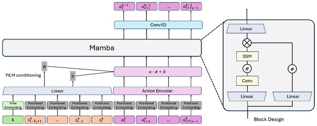
|
FastDP: Deployable Diffusion Policy for Fast Inference Speed
Chang Shi,
Amy Zhang
RLC Workshop on RL for Real Systems, 2025
paper
|
|
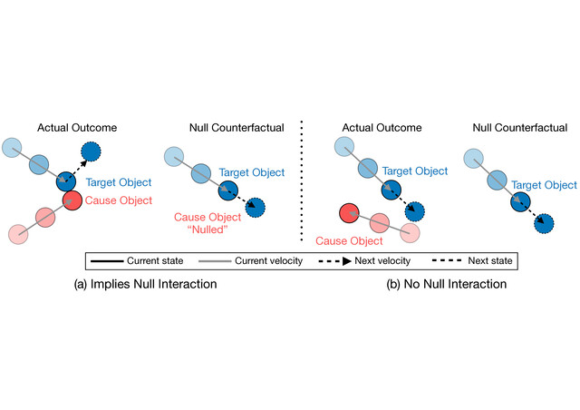
|
Null Counterfactual Factor Interactions for Goal-Conditioned Reinforcement Learning
Caleb Chuck,
Fan Feng,
Carl Qi,
Chang Shi,
Amy Zhang,
Scott Niekum
ICLR, 2025
arXiv
|
|
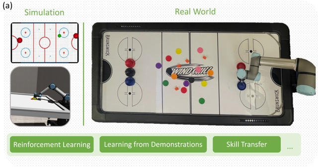
|
Robot Air Hockey: A Manipulation Testbed for Robot Learning with Reinforcement Learning
Caleb Chuck*,
Carl Qi*,
Michael J. Munje*,
Shuozhe Li*,
Max Rudolph*,
Chang Shi*,
Siddhant Agarwal*,
Harshit Sikchi*,
Abhinav Peri,
Sarthak Dayal,
Evan Kuo,
Kavan Mehta,
Anthony Wang,
Peter Stone,
Amy Zhang,
Scott Niekum
ICRA Workshops on Agile Robotics and Manipulation Skills, 2024
project page
/
arXiv
|
|
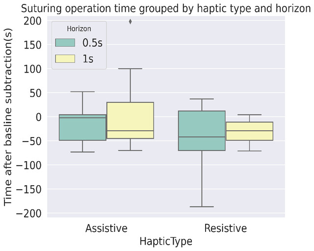
|
Haptic Guidance Using a Transformer-Based Surgeon-Side Trajectory Prediction Algorithm for Robot-Assisted Surgical Training
Chang Shi,
Jonathan Madera,
Heath Boyea,
Ann Majewicz Fey
IEEE International Conference on Robot and Human Interactive Communication (RO-MAN), 2023
paper
|
|
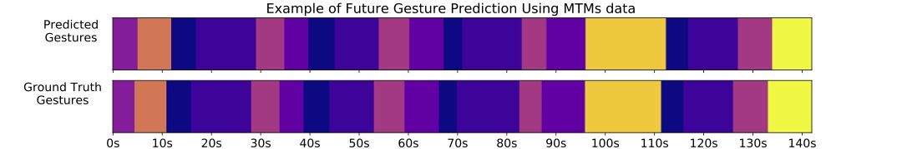
|
Recognition and Prediction of Surgical Gestures and Trajectories Using Transformer Models in Robot-Assisted Surgery
Chang Shi*,
Yi Zheng*,
Ann Majewicz Fey
IEEE/RSJ International Conference on Intelligent Robots and Systems (IROS), 2022
arXiv
|
|
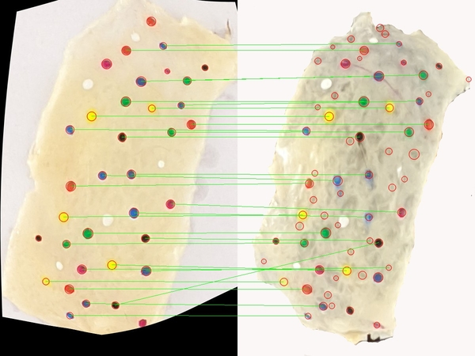
|
Non-rigid Cutaneous Tissue Deformation Estimation with Iterative RANSAC and TPS from Digital Images over Semi-ambiguous Artificial Markings
Chang Shi,
Dustin P. DeMeo,
Emma L. Larson,
John M. Galeotti,
Bryan T. Carroll
Computer Assisted Radiology and Surgery (CARS), 2021
Iterative bidirectional blob matching and thin-plate-spline warping over artificial dye markers to model how tissue deforms between fresh specimens and frozen sections.
|
|
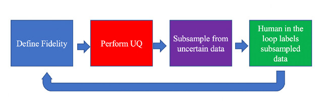
|
Uncertainty Quantification for Semi-supervised Multi-class Classification in Image Processing and Ego-motion Analysis of Body-worn Videos
Yiling Qiao,
Chang Shi,
Chenjian Wang,
Hao Li,
Matt Haberland,
Xiyang Luo,
Andrew M. Stuart,
Andrea L. Bertozzi
IS&T International Symposium on Electronic Imaging (EI), 2019
paper
|
Honors & Awards
- AAAI Doctoral Consortium 2026
- UT Professional Development Awards 2023, 2025
- Qualcomm Innovation Fellowship Selected Abstract 2023
- ISMR Travel Awards 2021
|
Service
- Organizer:
- Reviewer:
- ICRA, IROS, CoRL, RO-MAN, ISMR, RA-L, THRI
- NeurIPS, ICLR, ICML, AAAI, AISTATS
- Teaching Asistant:
- Outreach:
|
|